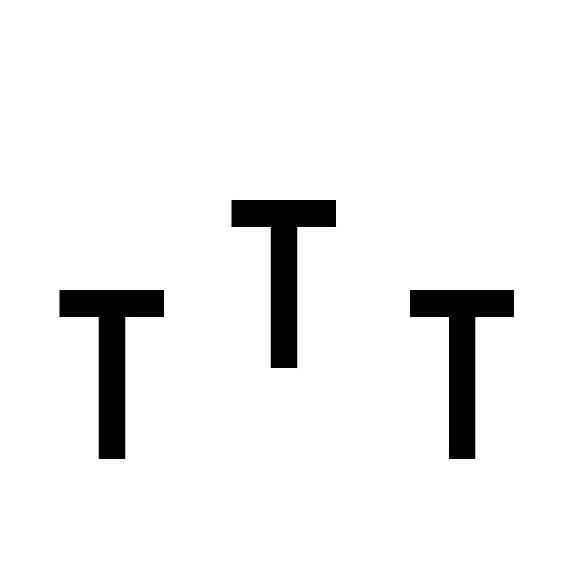

| 鋸娘怪談VER.2.0 | |
| 石山寺 | |
| (2017) | |
私の通う学校には、様々な伝説が存在する。
「伝説」と言ってしまうと少し大げさではあるのだけれど、それは怪談でも奇談でもないのだから、やはり伝説なのだろう。
伝えられた説、と言うのだから過去に起こった出来事であり、今現在は存在しない、もしくは存在するかどうか怪しいというものだろう。
でも、私の知っている「それ」は過去の出来事でもなく、存在するかどうか曖昧な物ではない。
いや、それは物ですらないのだけれど、しかしそれは確実に存在している。
物ではなく、者として存在している。
人はそのようなものを何と呼ぶのだろう？
お化け、妖怪、悪魔、怪物、それとも都市伝説だろうか？
おそらく、どれも正解だし不正解でもあるのだろう。
でも、あれは存在している。
他の誰でもなく、私がその存在を知っている。
だから、「あれ」ではなく名前で呼ぼうと思う。
みんなが何と呼んでいようと、私はあれを、あの「女の子」をこう呼ぶ。
「鋸町尖塔（おがまちせんとう）」と。
午後三時三十分、終わりを告げる鐘が鳴る。
退屈で窮屈な、いつも通りの授業が終わった。
今日はここまで、と先生は一言告げて学級委員へと合図する。
その合図を待ちわびたかのように委員はすぐさま号令をかけ、そして皆が思い思いの行動に移る。
部活動に所属していない私は、いつものように友達と帰ろうとしたのだけれど運悪く、先ほどまで授業をしていた先生に呼び止められてしまった。
「運悪く」というのは先生が私を呼び止めた理由に察しがついたからだ。
先生は少し申し訳なさそうに、もしかしたらそういう振りなのかもしれないが、私に用事を頼む。
「桃李(とうり)さん、申し訳ないのだけれどこの資料を美術室の教卓の上に置いてきてくれないかしら？」
予想通りの言葉が先生の口から出てきた。
「美術室ですか？・・・はい、わかりました。」
私は少し悩んだが、面倒であるという事以外には断る理由が思いつかなかったので先生の用事を引き受けた。
先生は「ありがとう」と一言告げて少し急いだ様子で教室を出て行った。
私は先生が教室から出ていくのを見届けると、頼まれた資料を手にした。
そして一緒に帰るつもりであった友達に「少し待っていてほしい」と告げようとしたのだが、それは友達の行動によって口にすることは出来なかった。
友達は、私と一緒に美術室まで行くと言ってきたのだ。
一瞬「手伝ってはくれないのだな」と心の中で毒づいてはみたが、特に拒む理由がないので友達に自分の鞄を持たせて並んで美術室に向かった。
自分のクラスがある階から、一つ上の階にある美術室。
友達と階段を上がりながら、私は今日のお昼休みに聞いたあることを思い出した。
「そういえば知ってる？お昼休みに聞いたんだけど、この学校の美術室って・・・」
出るらしい、と言おうとしたら友達が声を上げて私の言葉を遮った。
友達は大げさに耳を塞ぎ、「聞こえない、聞こえない」と言いながら階段を駆け上がっていく。
私は友達の行動に少し驚いたが、そんな彼女がおもしろかったので先ほどよりも大きな声で喋りながら友達を追いかけた。
階段を上りきり、目的の階の廊下を少し進んだところで友達が待っていてくれたので、私は彼女に謝ることにした。
「ごめんね、別に驚かすつもりはなかったの。ほんの出来心で・・・。」
私の態度に友達は怒っている様ではあったが二回ほどさらに謝ると、最後には少し頬を膨らませながら私の頭を軽く叩き、そして「もうやめてよね」と一言。
どうやら許してくれたようである。
そこからはまた二人並んで美術室へ向かった。
階段からは距離にして十メートルも無かったので、すぐに美術室まで辿り着いた。
扉の鍵はどうやら開いている様なので、私は友達を教室の前に待たせ一人で美術室へと入っていった。
美術室に入ったのは、この学校に入学してすぐの部活動見学の時以来だったので、この教室は私の目には新鮮に映った。
私は教室の中を一通り見渡してから、教卓へと資料を置いた。
一仕事終えた私は、周りに誰も居ないので大きく腕を上げながら体を伸ばしてストレッチをした。
周りに人が居る時は制服の乱れを気にして出来ないのだけれど、こういう時は気にせずに行える。
そうして体を伸ばした私は、教室の外で待つ友達の元へと向かおうとした。
しかしそこで私は、廊下へと続く扉とは別に教室内にある扉が開いていることに気が付いた。
扉の上には「美術準備室」のプレートがあり、扉の窓からはイーゼルや見本の彫像などが見えた。
それを見た私はちょっとした好奇心に突き動かされ、友達の待っている廊下ではなく美術準備室の方へと足を向けた。
「失礼しまーす...。」
私は扉に手を掛け、恐る恐る扉を開けた。
しかし当然のように中には誰も居らず、安心した私はそのまま教室の中へと入っていった。
中には窓から見えたイーゼルや彫像以外にも、様々な工具や資料、さらには誰かの作品らしき絵まで置いてあった。
「へえ、こんな風になってるんだ...。」
私は資料本などを手に取ったりして教室内を物色した。
こんな所が先生に見つかればお叱りを受けることになるだろう。
そうして室内を物色し続けていた私は、不意に眩しい光を目に感じた。
「う、眩しい。うん？あれはいったい何だろう・・・？」
私を襲った光は、どうやら室内に入ってきた太陽光が何かに反射したものらしい。
私はその光を反射したもの何なのか気になり、教室の奥の方へと進む。
するとそこには、あまり美術とは関係がなさそうな、どちらかと言えば技術家庭で使うようなものが壁に飾られていた。
それは鋸だった。
私の身の丈ほどもありそうな、巨大な鋸であった。
その大きさから本当に鋸か怪しくもあったが、しかしその独特の刃は紛れもなく鋸のそれであった。
「原因はこれかぁ...それにしても、大きい。」
私はその鋸を眺めていた。
いったい誰がいつどんな状況でこれを使うのだろうか、などと考えていた私はあることをすっかりと忘れていた。
それは教室の外で待たせている友達の存在であった。
私がその鋸に夢中になっていると、外から私を呼ぶ友達の声が聞こえた。
「あ！しまった...。ごめん、今行くー。」
私はすぐさま返事をして、鋸には目もくれずに急いで準備室を出た。
準備室から美術室へ戻り、そして廊下へと出ようとして扉に向かうとなぜか扉が閉まっていた。
「あれ、扉閉めて入ったんだっけ...？」
閉めた記憶のない扉が閉まっていたため、そんな独り言を口にしながら私は扉に手を掛けた。
「え？」
しかしどういう事か、扉は鍵まで閉まっていたのだ。
私はもう一度扉を開けようとしたが、やはり開かなかった。
少し怖くなった私は扉の向こう側で待っている友達に助けを求めた。
「ねえ、なんか扉閉まってるんだけど、開けてくれない？」
少し大きめの声で呼びかけるが、返事は無かった。
「聞こえるー？ねえってば！」
さらに声を大きくして呼びかけるが、やはり返事は来なかった。
私はこの状況に頭が混乱していた。
あれから何度か声をかけたが一向に返事はなく、携帯電話の時刻を見ればクラスを出てからすでに三十分ほどが経過していた。
私の中で徐々に恐怖が大きくなっていく。
そこで私は不意に思い出してしまった。
美術室に来る前、友達に話そうとした事を。
それは美術室にまつわる伝説。
美術室に出るお化け、妖怪、悪魔、怪物、もしくは都市伝説の類のこと。
そうして私の心が恐怖の渦に包まれ始めた時、突然大きな物音が響いた。
私は一瞬頭が真っ白になって、体が固まってしまった。
それから恐る恐る音のした方へと顔を向ける。
そこには先ほどまでいた美術準備室の扉があった。
扉の窓からは先ほどと変わらない光景が見えている。
いや、変わらない光景だと思いたかったのだ。
そこにはあの鋸が見えていた。
イーゼルと彫像と、そしてあの鋸。
「な、なんであれがあんなところにあるの...。」
私は歯を震わせながら、扉の方を見続けていた。
すると窓の向こうで、あの鋸が動いているのが見えた。
まるで浮いているかのように、扉に向かって動いている。
私はその場にへたり込み、その光景を見ているしかなかった。
鋸がそのまま扉へと近づくと、突然教室の放送スピーカーから声が響いてきた。
私はとっさにスピーカーの方へと顔を向ける。
スピーカーから聞こえる声はノイズが混じっていて何を言っているのか聞き取れない。
しかしその声は聴いたことのあるような声だった。
「はじ―――し――。私―――見つ――――。あはは！」
最後に笑い声が響き、そして大きなノイズ音を発してその声は途絶えた。
私はこの異常な状況に、完全に心を飲み込まれていた。
放心状態の私はそのまま先ほどの準備室へと顔を向けた。
すると驚いた事に扉が開いていたのだ。
「え、うそ...？」
私がその事実に困惑しているとき、不意に背後から気配を感じた。
とっさに背後を振り向くと、そこにはあの鋸を持った女の子が立っていた。
その子はこの異常な空気とは全く正反対の、少女の様な顔でゴシック調の服を着ていた。
女の子は私の恐怖に染まった顔を見ると可愛らしい笑顔を浮かべながらその大きな鋸の、その刃を私の首に宛がう。
いきなりの出来事に私は言葉を発することが出来なかった。
「あ、え...？」
私は首に宛がわれた鋸と、それを私の首に宛がっている女の子の顔を交互に見る。
すると女の子が初めて言葉を発した。
「またね。」
その言葉と共に、女の子は大きく鋸を引き抜いた。
めり込む刃が皮を引き裂き血管を切断し、骨を削り切る。
真っ赤な水飛沫を上げながら、私の首は胴から切り離された。
切り離された私の頭は中を舞う。
そんな最中の私の目には、あの女の子が映っていた。
口を動かして、何かを言っているようだ。
もう声は聞こえない。
でもその口の動きから、女の子が何と言っているのかは分かった。
彼女はこう言っている。
「わ・た・し・の・な・ま・え・は――――。」
そこで私の意識は闇に堕ちた。

頬に冷たい感触を感じる。
それと同時に誰かが私を呼ぶ声が聞こえる。
どうやら私は俯せになっているようだ。
「んん...？」
私はゆっくりと目を開く。
そこには私の顔を心配そうな目で見つめる友達の姿があった。
「あれ、私はいったい...？」
身体を起こしながら、私は周りを見渡す。
そこにはイーゼルや彫像、部員の作品らしき絵や彫刻が飾られていた。
ここはどうやら美術室で、私はそこに俯せで眠っていたようだ。
友達が言うには、私が美術室に入ってからなかなか出てこなかったので様子を見に来たら、床で倒れていたのだそうだ。
「そっか...ごめんね、心配かけて。」
私は友達に心配をかけさせないために笑顔をつくる。
そんな私の顔を見た友達は、とりあえず安心してくれたのか先ほどまでの心配そうな表情は消えていた。
その後「保健室によって行こう」と友達に勧められたが私は断り、普通に帰宅することにした。
私は友達に持ってもらっていた自分の鞄を受け取り、友達の後に続いて美術室を出ようとした。
その時、不意に声が聞こえたような気がして私は後ろを振り返った。
しかしそこにはいつもの美術室があるだけで、あの子の姿はなかった。
私の身の丈ほどもある大きさの鋸を手にした、ゴシック調の洋服に身を包んだ女の子。
あれは夢だったのだろうか？
それとも現実？
まだ少し、気が動転しているためうまくは考えられない。
でも一つ言えることがある。
きっとあの子とはまた会う気がする、ということだ。
最後の瞬間、あの子は「またね」と言っていた。
それはつまり次があると言う事だ。
それに美術室での一件は非常に怖くて、正直あまり思い出したくないようなものだったが、でもなぜか、なぜかは分からないけれどあの子を嫌いになれない自分がいる。
鋸で首を切断され、殺されたと思ったけれど私は生きている。
そういう出来事そのものが怖いだけであって、あの子自身はただ―――。
それと、あの子は私に感謝をしていたような気がするのだ。
首をはねられて、感謝をされるというのは何ともおかしな話かもしれないが、確かに私はそう感じた。
だからこそ、あの子は私に名前を教えてくれたのではないのだろうか？
誰にも知られていなかった、美術室に出るという「何か」、それ自身の名前を。
だから私は決めたのだ。
次にあったその時は私の名前を、佐倉原（サクラバラ）桃李という名前を教えることを。
そうしたらあの子はきっと答えてくれる。
なぜ私の首をはねたのか、なぜ美術室に出るのか、なぜ私に感謝をしたのか。
私は振り返るのをやめて前を向き、先を歩く友達に続いていく。
そうそう、それと一つやることがあった。
あの子と再会する前にやることが。
それはみんなにしっかり教えること。
何を？
それは美術室に出るという噂のあれの名前。
私に教えてくれた、その名前を。
巨大な鋸を手にして見たものの首をはねる女の子、その名は「鋸町尖塔」。
そんなことを考えながら、私は美術室を後にしたのだった。